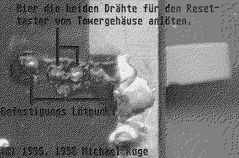

Previous
Next
TOC
Beim TT030 ist eine Leitung des Reset-Tasters vom Tower mit Masse
und die andere mit Pin 8 von LM556 oder NE556, U103 zu verbinden.
Beim MEGA STE kommt die eine Leitung wieder auf Masse und die an-
dere an die Seite des Widerstands R213 (vom ROM-Port ca. 5 cm
rechts, oberhalb von U201 (LM556)), die zu U201 zeigt.
Beim 1040 STE die eine Leitung wieder auf Masse und die andere an
Pin 2 von U 104 (LM555) oder mit der Anode von D100 (die Anode ist
die Seite OHNE Strich (für die Nicht-Elektroniker)).
Beim 1040 ST die eine Leitung wieder auf Masse und die andere an
Pin 6 von NE556 (oder LM556, also jedenfalls 556!)
Beim 260/520ST die eine Leitung wieder auf Masse und die andere an
Pin 6 von NE556 (oder LM556, also jedenfalls 556!) ist Chip U37!
Beim Falcon030 die eine Leitung wieder auf Masse und die andere an
den PLUS Pin vom Kondensator C7 oder an die Anode von D1 (die Anode
ist die Seite OHNE Strich (für die Nicht-Elektroniker)).
Bei den von Atari verwendeten Resettaster kann man auch folgende
möglichkeit auf der UNTERSEITE der Platine in betracht ziehen:

Kapitel Reset-Taster am Towergehäuse - Wo anschliessen?, Seite 1